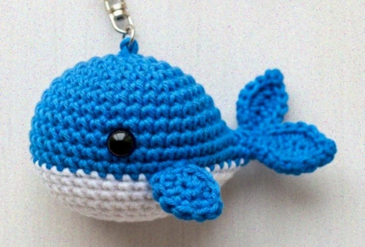

Mini baleia

Materiais necessários Fio Amigurumi (uma cor para o corpo e um fio preto para bordar os olhos) Agulha de crochê compatível (sugestão: 2,5 mm) Enchimento acrílico Marcador de pontos e agulha de tapeceiro Abreviações AM: Anel Mágico pb: Ponto Baixo aum: Aumento (2 pontos baixos no mesmo ponto) dim: Diminuição Invisível (pegar apenas a alça da frente de 2 pontos e fechá-los juntos) corr: Correntinha pbx: Ponto Baixíssimo Passo a passo da baleia Trabalhe em espiral, usando o marcador no primeiro ponto de cada carreira. Corpo Carr 1: 6 pb no AM (6) Carr 2: 6 aum (12) Carr 3: (1 pb, 1 aum) repita 6 vezes (18) Carr 4: (2 pb, 1 aum) repita 6 vezes (24) Carr 5 a 7: 24 pb (3 carreiras sem aumentos) Dica: Se preferir usar olhos de segurança com trava, coloque-os entre as carreiras 5 e 6 com 5 pontos de distância entre eles. Se não, pode bordar no final. Carr 8: (2 pb, 1 dim) repita 6 vezes (18) Carr 9: (1 pb, 1 dim) repita 6 vezes (12) Coloque o enchimento firmemente neste momento. Carr 10: 6 dim (6) Não feche o anel ainda, vamos emendar as nadadeiras diretamente na última carreira. Cauda e Nadadeiras Laterais (Sem costura) Cauda: No ponto seguinte da Carr 10, suba 4 corr. Faça 3 pbx voltando pelas correntinhas. Faça 1 pbx no mesmo ponto de base para prender. Suba mais 4 corr, faça 3 pbx voltando e prenda com 1 pbx no próximo ponto da base. A cauda está pronta. Nadadeiras laterais: Caminhe com pbx por dentro do tecido até as laterais da baleia (na altura da Carr 7). Suba 3 corr, faça 2 pb voltando e prenda com pbx no corpo. Repita do outro lado. Acabamento Corte o fio deixando um pedaço para o arremate. Com a agulha de tapeceiro, esconda a ponta do fio por dentro do corpo. Se não usou olhos de plástico, borde dois pequenos traços pretos na frente para fazer os olhinhos.